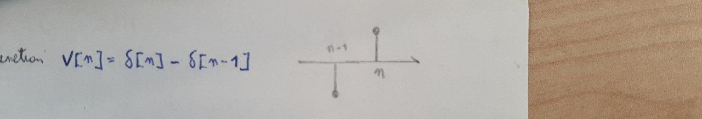

Lecture 06 - 04 October 2021¶
Simulation of an analog system by means of a digital one¶
This lecture focuses on the topic of “Simulation of an analog system by means of a digital one”.
Does such \(h[n] : y'[n]=\sum_{k}h[n-k]x_s[k]\) exists? And, if so, how is it possible to find it? Let’s start with the function \(y'[n]=\sum_{k}h[n-k]x_s[k]\) and make some assumptions:
1a) Both \(x_A(t), G(t) \in \mathcal{L}^2\).¶
If this is true it is possible to express the sampled output signal via its inverse Fuorier transform:
2b) The simulator \(h[n]\) is BIBO Stable¶
If this is the case, it is possible to swap the summation and the integral in \(\sum_k \leftrightarrow \int_{-\infty}^{+\infty}\) without dealing with the convergence:
where the condition \(z=e^{-i\omega T}\) was introduced to obtain the z-transform in conjunction with the condition \(z\in \Gamma_1 \subset ROC\) and the BIBO stability of the system.
Now, consider the sampling of the output signal \(y_A(t)\):
In order to satisfy the requirement \(y'[n]=y_A[n]\) we need:
The easiest solution to that equation is \(H\left( z=e^{-i\omega Tn}\right)=\tilde{G}(\omega)\) but it presents many problems, the most important of which is that it requires \(\tilde{G}(\omega)\) to be periodic with period T as \(H\left( z=e^{-i\omega Tn}\right)\) satisfies that property by default. A workaround is to force the whole integral to be zero with an assumption:
Assumption 2: The input signal is \(\frac{2\pi}{T}\) band limited¶
this forces the equality \(H\left( z=e^{-i\omega Tn}\right)=\tilde{G}(\omega)\) only on \(\left[-\frac{\pi}{T};\frac{\pi}{T} \right]\).
The discrete transfer function can be found via:
properties
\(G(t)\in\mathcal{R} \iff h[n]\in\mathcal{R}\), proof by substitution.
BIBO STABILITY: must be checked on occurence but it’s generally true
CAUSALITY IS NOT CONSERVED
Examples¶
First order low pass filter¶
but if \(T\not \rightarrow 0\) there is NO WAY to compute the integral.
The differentiator¶
The differentiator’s equation is \(\tau \frac{d}{dt}\rightarrow -i\omega\tau=\tilde{G}(\omega)\)
Backward intepretation of the simulation theorem¶
The one used above was the straightforward interpretation of the theorem. To overcome some of the problems it is possible to consider a backward intepretation of the simulation theorem, that is, the requirement are relaxed to \(y'[n]\sime y[n]\) so that \(\tilde{G}(\omega)=H(z=e^{-i\omega T}) + o(\omega^n)\) in \(\left[ -\frac{\pi}{T}; \frac{\pi}{T} \right]\).
e.g. The differentiator (again)¶
Let’s take the approximate transfer function (which is given/found by an intuition): \(V[n]=\delta[n]-\delta[n-1]\) with z-transform \(V(z)=1 - \frac{1}{z}\). By taking the limit \(\omega T << 1\), it is possible to write:
\end{align*}
It is even possible to improve the accuracy by introduciong new terms:
By comparing the approximated solution with the analitic one \(-i\omega T\) it is possible to write a system of equations and solve it:
